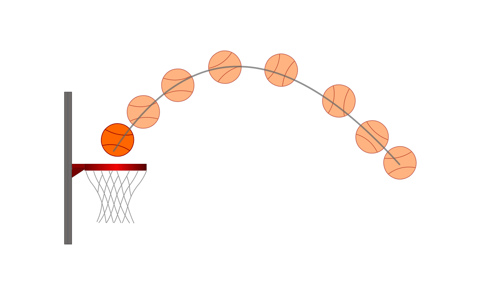

Esta página sirve para resolver cualquier ejercicio del tipo tiro parabólico,
siempre y cuando se tenga alguno de estos parámetros para el cálculo del mismo:
Gravedad[g(9,81 m/s²)], Tiempo(t), Altura Máxima(h), Velocidad Inicial(Vi) y
Velocidad Final(Vf).
Carga de Datos
Resultados
Tiempo:
Velocidad Inicial:
Altura:
¿Qué es el Tiro Vertical?
Tiro Vertical se trata de un movimiento rectilíneo uniforme variado, también
conocido como MRUV. En un tiro vertical, la velocidad cambia y existe una aceleración
que está dada por la acción de la gravedad. El tiro vertical, cuya dirección puede
ser descendente o ascendente, tiene una velocidad inicial que resulta diferente a cero.
El cuerpo en cuestión se lanza hacia arriba, impulsado con una cierta velocidad.
Luego regresa al punto de partida con la misma velocidad, aunque en un sentido contrario
al que tenía en el momento del lanzamiento.

Características Del Tiro Vertical
El cuerpo lanzado en un tiro vertical sube y luego baja, regresando al punto de partida.
Cuando el cuerpo alcanzó la altura máxima, la velocidad resulta nula. En ese instante,
el cuerpo deja de subir e inicia su descenso. El tiempo que el cuerpo demora en llegar a la
altura máxima resulta idéntico al tiempo que tarda en volver a su punto de partida. Es
importante destacar que existen diversas ecuaciones que permiten medir diferentes magnitudes
vinculadas al tiro vertical. Estas ecuaciones trabajan con variables como la velocidad inicial,
la altura y la aceleración.